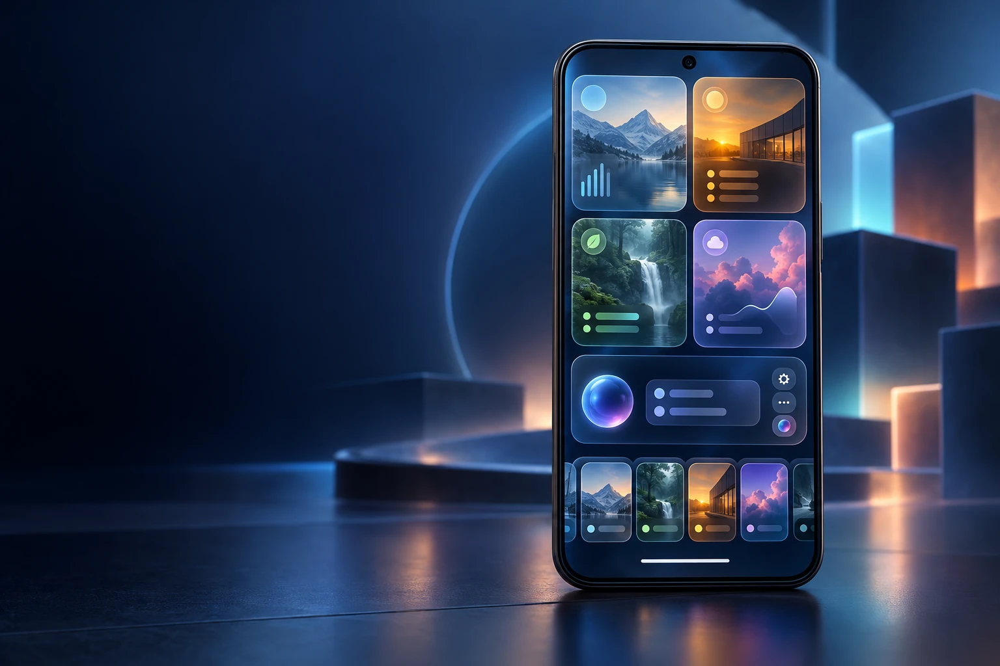
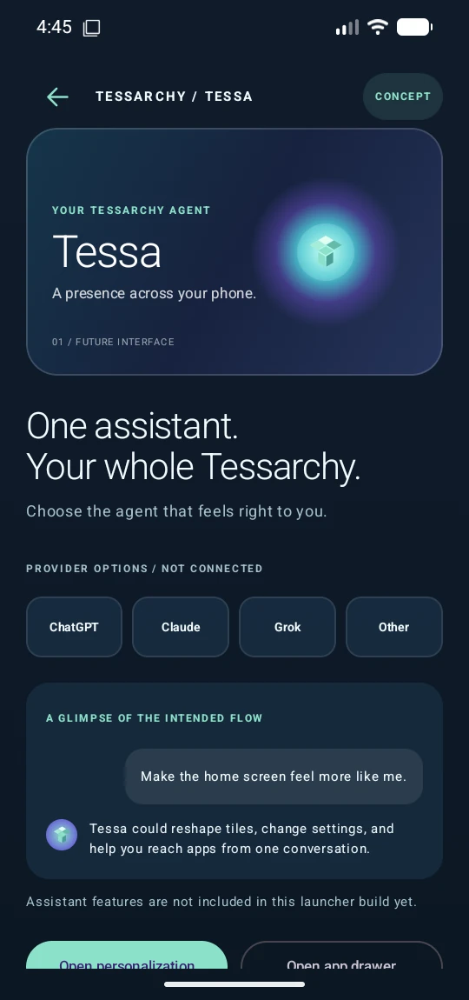

09:41
Glanceable tiles
Tile content can surface useful app stats and actions.
AGENT-FIRST ANDROID EXPERIENCE / BUILD 0.1.0
A Metro-inspired launcher is the first layer. The direction is a phone shaped around glassy, interactive tiles, a customizable widget gallery, Window Tape, and the AI agent you choose.

Metro gives Tessarchy its visual grammar: direct, typographic, colorful squares that make the important things easy to find. We are extending that idea into an Android experience organized around the tiles, settings, apps, and AI agent the user chooses.
The next design moves toward glassy image-backed tiles with useful stats and actions, a gallery for creating tiles and widgets, and a bottom Window Tape for moving between apps. An AI layer should understand and operate Tessarchy through clear, user-approved actions.
Read the product and technical guide ↗Tile content can surface useful app stats and actions.
Color and imagery help each interactive tile feel distinct.
Use ChatGPT, Claude, Grok, or another supported provider.
Let users shape tiles, widgets, settings, and assistant behavior.
The current app is a Kotlin Compose Android launcher. These captures show build 0.1.0 on a tall Android 17 preview emulator and were refreshed on October 26, 2026. Glass image tiles and the launcher section tape now run in the app; live AI, widgets, and system-level app windows remain future work.

The live clock and date lead into glass image tiles. Reorder, resize, or hide tiles, then choose Midnight, Daylight, or Cobalt.

Pick a palette, control tile size and visibility, or reorder tiles. The shown build keeps those choices on device.
This capture shows the Window Tape prototype: swipe or tap between Home, Apps, Tessa, and Studio. Side-by-side control of arbitrary Android app windows remains a longer-term system goal.
Watch the full MP4 ↗
The interface previews provider choice and a shared Tessarchy action layer. It is a real screen in the app; the assistant itself is not connected yet.
The visual direction now adds translucent glass, background imagery, compact stats, and more room for user-created components. The new hero is a concept mockup; the running-build captures above remain the source of truth for implemented UI.
✳ Concept artwork is an exploration of direction. Only the emulator captures above represent the implemented app.
Tessarchy should let you choose the assistant provider and model that suit you, then give that agent a useful, explicit way to understand and operate the Tessarchy experience.
Availability will depend on each provider’s API, account, and supported capabilities. Provider selection and credentials are future work.
A planned action catalog will make tile state, layouts, preferences, and supported widget information available to the chosen agent in a structured form.
Change a layout, open a tile, adjust an exposed setting, or create a component through named actions. The goal is to make Tessa selectable as the phone’s assistant entry point where Android and device support allow it.
Other apps and Android surfaces need explicit bridges, app APIs, permissions, or platform support. A launcher cannot automatically inspect every app’s private data.
Long-range goal: make the chosen agent a natural control layer for the whole Tessarchy experience—tiles, widgets, settings, and supported app and system surfaces. Deeper Android control would require a supported rooted/AOSP build. This is a future ambition, not a current feature; Android and app security boundaries still shape what the agent can access.
The practical path starts as a normal Android home app and adds capabilities through supported APIs. A custom rooted/AOSP system image is the long-range destination for deeper control of system surfaces; it needs separate device, security, and compatibility engineering.
Metro grid · app drawer · saved tile customization
Image-backed tile templates · stats · AppWidgetHost · creator gallery
Provider adapter · tile/settings tools · assistant entry point
Gesture prototype · adjacent app views · supported Android integrations
AOSP build · system surfaces · device and vendor integration
Build the user-facing foundation first, then add an agent action layer and evaluate what Android exposes before moving toward a custom system.
Open the full 20-item audit roadmap ↗Android Home flow, app drawer, accessibility pass, and a validated debug build.
Define tile data and actions, background treatments, stats, widget hosting, and user-created layouts.
Build a provider adapter and a scoped command catalog for tiles, layouts, and settings; then add a voice and text assistant surface.
Prototype app navigation within launcher limits, research system integration, then evaluate rooted AOSP builds and device support. OnePlus 7 remains a concept target until validated.
A SMALL PROJECT WITH A BIG SURFACE
Tessarchy Android Edition is public. Explore the running launcher, the agent-first Metro concept, the AI integration plan, and the long-range AOSP direction.